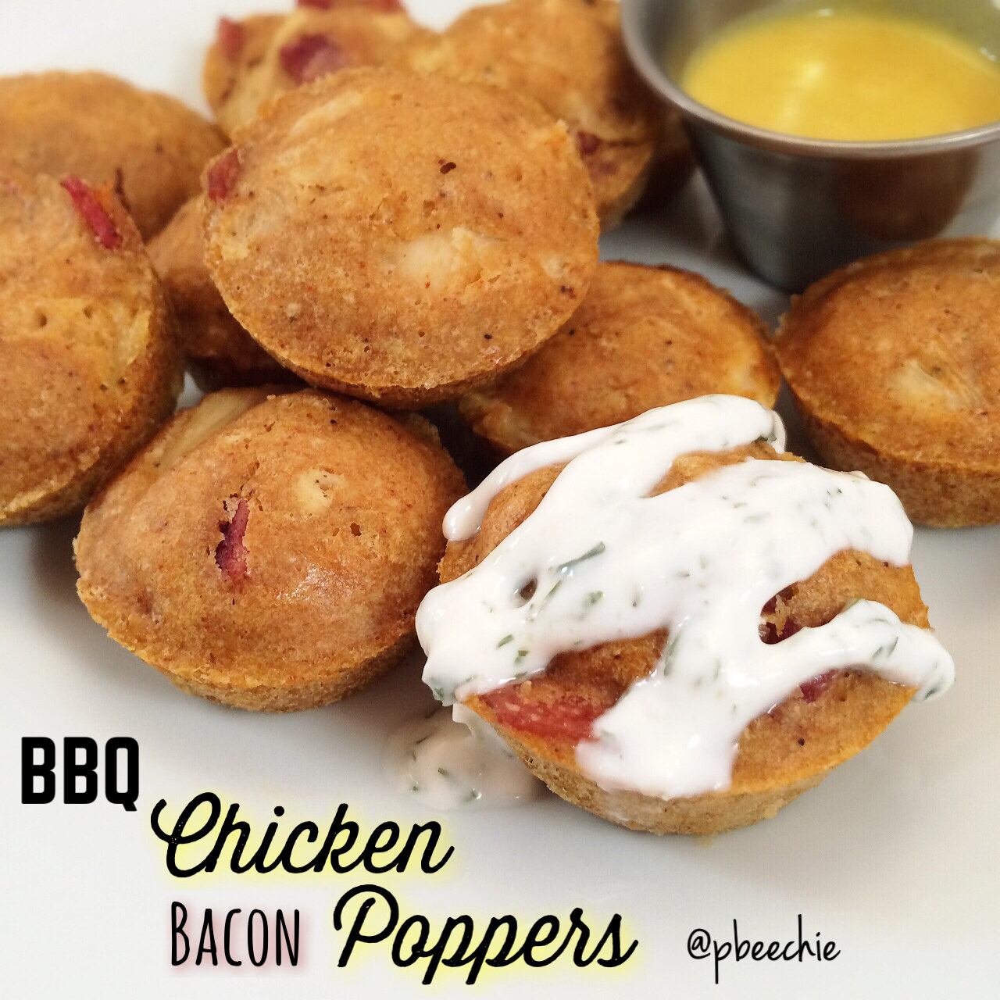

BBQ Chicken Bacon Poppers
When I got home last night, I wanted two things and two things only: meat and bread. Sooo I made BBQ chicken and turkey bacon poppers; it works. Turkey bacon game's strong this week. I couldn't decide what kinda sauce I wanted so I smothered some in healthy ranch and dipped others in a healthy honey mustard. Meat and bread craving satisfied. So glad it's Wednesday and over hump day; two more days until the weekend. If the weekend could come ASAP, that'd be nice thanks. 
- 1/4 cup oat flour (ground up raw oats)
- 1/4 cup whole wheat pastry flour (or more flour of choice)
- 1/4 cup water
- 1 egg white
- salt free BBQ seasoning (Frontier brand)
- 2 oz raw chicken
- 2 strips of turkey bacon
Mix the oat flour, whole wheat flour, water, egg white, and barbeque seasoning (I get my seasoning on iherb.com. Discount code "GIK407" gives $5-10 off!). Spray a mini cupcake pan with nonstick spray. Pour the batter into 12 mini cupcake molds. Cut 2 strips of turkey bacon into small cubes and cook in a pan. Also cook 2 oz chicken, then shred it. Distribute the cooked meat amongst the batter. Bake at 350 F for 7-8 mins. This can also be cooked in a regular cupcake mold, but baking time will be longer so keep that in mind!